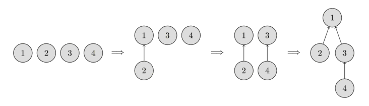
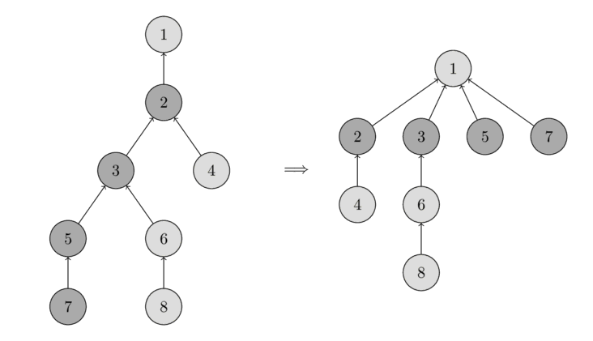

ডিসজয়েন্ট সেট ইউনিয়ন¶
এই আর্টিকেলে ডিসজয়েন্ট সেট ইউনিয়ন বা ডিএসইউ ডেটা স্ট্রাকচার নিয়ে আলোচনা করা হয়েছে। এটিকে প্রায়ই ইউনিয়ন-ফাইন্ড-ও বলা হয়, কারণ এর দুটি প্রধান অপারেশন রয়েছে।
এই ডেটা স্ট্রাকচার নিম্নলিখিত সুবিধাগুলো প্রদান করে। আমাদের কয়েকটি এলিমেন্ট দেওয়া আছে, যেগুলোর প্রতিটি আলাদা একটি সেট। একটি ডিএসইউ-তে যেকোনো দুটি সেট একত্রিত করার অপারেশন থাকবে, এবং এটি বলতে পারবে যে একটি নির্দিষ্ট এলিমেন্ট কোন সেটে আছে। ক্লাসিক্যাল ভার্সনে একটি তৃতীয় অপারেশনও আছে, যা একটি নতুন এলিমেন্ট থেকে একটি সেট তৈরি করতে পারে।
সুতরাং এই ডেটা স্ট্রাকচারের বেসিক ইন্টারফেস মাত্র তিনটি অপারেশন নিয়ে গঠিত:
make_set(v)- নতুন এলিমেন্টvনিয়ে একটি নতুন সেট তৈরি করেunion_sets(a, b)- নির্দিষ্ট দুটি সেটকে মার্জ করে (যে সেটে এলিমেন্টaআছে, এবং যে সেটে এলিমেন্টbআছে)find_set(v)- যে সেটে এলিমেন্টvআছে সেই সেটের রিপ্রেজেন্টেটিভ (যাকে লিডারও বলা হয়) রিটার্ন করে। এই রিপ্রেজেন্টেটিভ হলো সংশ্লিষ্ট সেটের একটি এলিমেন্ট। এটি প্রতিটি সেটে ডেটা স্ট্রাকচার নিজেই সিলেক্ট করে (এবং সময়ের সাথে পরিবর্তন হতে পারে, বিশেষতunion_setsকলের পরে)। এই রিপ্রেজেন্টেটিভ ব্যবহার করে দুটি এলিমেন্ট একই সেটে আছে কি না তা পরীক্ষা করা যায়।aএবংbঠিক তখনই একই সেটে থাকে, যখনfind_set(a) == find_set(b)হয়। অন্যথায় তারা ভিন্ন সেটে আছে।
পরবর্তীতে আরও বিস্তারিত বর্ণনা করা হয়েছে যে, এই ডেটা স্ট্রাকচার গড়ে প্রায় $O(1)$ সময়ে এই প্রতিটি অপারেশন সম্পাদন করতে দেয়।
এছাড়াও একটি সাবসেকশনে ডিএসইউ-এর একটি বিকল্প স্ট্রাকচার ব্যাখ্যা করা হয়েছে, যা $O(\log n)$ গড় কমপ্লেক্সিটি অর্জন করে, কিন্তু সাধারণ ডিএসইউ স্ট্রাকচারের চেয়ে আরও শক্তিশালী হতে পারে।
একটি এফিশিয়েন্ট ডেটা স্ট্রাকচার তৈরি করা¶
আমরা সেটগুলো ট্রি আকারে সংরক্ষণ করব: প্রতিটি ট্রি একটি সেটের সাথে সঙ্গতিপূর্ণ হবে। এবং ট্রির রুট হবে সেটের রিপ্রেজেন্টেটিভ/লিডার।
নিচের ছবিতে আপনি এই ধরনের ট্রির রিপ্রেজেন্টেশন দেখতে পারবেন।

শুরুতে, প্রতিটি এলিমেন্ট একটি একক সেট হিসেবে থাকে, তাই প্রতিটি ভার্টেক্স নিজেই একটি ট্রি। তারপর আমরা এলিমেন্ট ১ ধারণকারী সেট এবং এলিমেন্ট ২ ধারণকারী সেট একত্রিত করি। তারপর আমরা এলিমেন্ট ৩ ধারণকারী সেট এবং এলিমেন্ট ৪ ধারণকারী সেট একত্রিত করি। এবং শেষ ধাপে, আমরা এলিমেন্ট ১ ধারণকারী সেট এবং এলিমেন্ট ৩ ধারণকারী সেট একত্রিত করি।
ইমপ্লিমেন্টেশনের জন্য এর মানে হলো আমাদের একটি parent অ্যারে রাখতে হবে যা ট্রিতে তার নিকটতম পূর্বসূরির রেফারেন্স সংরক্ষণ করে।
নেইভ ইমপ্লিমেন্টেশন¶
আমরা এখন ডিসজয়েন্ট সেট ইউনিয়ন ডেটা স্ট্রাকচারের প্রথম ইমপ্লিমেন্টেশন লিখতে পারি। প্রথমদিকে এটি বেশ ইনএফিশিয়েন্ট হবে, কিন্তু পরে আমরা দুটি অপটিমাইজেশন ব্যবহার করে এটি উন্নত করব, যাতে প্রতিটি ফাংশন কলে প্রায় কনস্ট্যান্ট সময় লাগে।
আমরা যেমন বলেছি, এলিমেন্টগুলোর সেট সম্পর্কে সকল তথ্য একটি parent অ্যারেতে রাখা হবে।
একটি নতুন সেট তৈরি করতে (অপারেশন make_set(v)), আমরা কেবল ভার্টেক্স v-তে রুটসহ একটি ট্রি তৈরি করি, অর্থাৎ এটি নিজেই নিজের পূর্বসূরি।
দুটি সেট একত্রিত করতে (অপারেশন union_sets(a, b)), আমরা প্রথমে a যে সেটে আছে সেটির রিপ্রেজেন্টেটিভ খুঁজি, এবং b যে সেটে আছে সেটির রিপ্রেজেন্টেটিভ খুঁজি।
যদি রিপ্রেজেন্টেটিভ দুটি অভিন্ন হয়, তাহলে আমাদের কিছু করার নেই, সেটগুলো ইতিমধ্যেই মার্জ করা।
অন্যথায়, আমরা কেবল একটি রিপ্রেজেন্টেটিভকে অন্য রিপ্রেজেন্টেটিভের প্যারেন্ট হিসেবে নির্ধারণ করি - এভাবে দুটি ট্রি একত্রিত হয়।
সবশেষে রিপ্রেজেন্টেটিভ খোঁজার ফাংশনের (অপারেশন find_set(v)) ইমপ্লিমেন্টেশন:
আমরা কেবল ভার্টেক্স v-এর পূর্বসূরিদের ধরে উপরে উঠি যতক্ষণ না রুটে পৌঁছাই, অর্থাৎ এমন একটি ভার্টেক্স যেখানে পূর্বসূরির রেফারেন্স নিজেকেই নির্দেশ করে।
এই অপারেশনটি রিকার্সিভভাবে সহজেই ইমপ্লিমেন্ট করা যায়।
void make_set(int v) {
parent[v] = v;
}
int find_set(int v) {
if (v == parent[v])
return v;
return find_set(parent[v]);
}
void union_sets(int a, int b) {
a = find_set(a);
b = find_set(b);
if (a != b)
parent[b] = a;
}
তবে এই ইমপ্লিমেন্টেশনটি ইনএফিশিয়েন্ট।
এমন একটি উদাহরণ তৈরি করা সহজ যেখানে ট্রিগুলো দীর্ঘ চেইনে পরিণত হয়।
সেক্ষেত্রে প্রতিটি find_set(v) কলে $O(n)$ সময় লাগতে পারে।
এটি আমাদের কাঙ্ক্ষিত কমপ্লেক্সিটি (প্রায় কনস্ট্যান্ট সময়) থেকে অনেক দূরে। তাই আমরা দুটি অপটিমাইজেশন বিবেচনা করব যা কাজকে উল্লেখযোগ্যভাবে ত্বরান্বিত করবে।
পাথ কম্প্রেশন অপটিমাইজেশন¶
এই অপটিমাইজেশনটি find_set-কে দ্রুত করার জন্য ডিজাইন করা হয়েছে।
আমরা যদি কোনো ভার্টেক্স v-এর জন্য find_set(v) কল করি, তাহলে আমরা v এবং প্রকৃত রিপ্রেজেন্টেটিভ p-এর মধ্যের পথে যে সকল ভার্টেক্স ভিজিট করি সেগুলোর সকলের জন্য রিপ্রেজেন্টেটিভ p খুঁজে পাই।
কৌশলটি হলো সেই সকল নোডের পাথ ছোট করা, প্রতিটি ভিজিটেড ভার্টেক্সের প্যারেন্ট সরাসরি p-তে সেট করে।
আপনি নিচের ছবিতে এই অপারেশনটি দেখতে পারবেন।
বাঁদিকে একটি ট্রি আছে, এবং ডানদিকে find_set(7) কল করার পরে কম্প্রেসড ট্রি আছে, যা ভিজিটেড নোড ৭, ৫, ৩ এবং ২-এর পাথ ছোট করে।

find_set-এর নতুন ইমপ্লিমেন্টেশন নিম্নরূপ:
int find_set(int v) {
if (v == parent[v])
return v;
return parent[v] = find_set(parent[v]);
}
এই সরল ইমপ্লিমেন্টেশনটি যা উদ্দেশ্য ছিল তাই করে: প্রথমে সেটের রিপ্রেজেন্টেটিভ (রুট ভার্টেক্স) খুঁজে বের করে, এবং তারপর স্ট্যাক আনওয়াইন্ডিং প্রক্রিয়ায় ভিজিটেড নোডগুলো সরাসরি রিপ্রেজেন্টেটিভের সাথে সংযুক্ত হয়।
এই সরল পরিবর্তনটিই গড়ে প্রতি কলে $O(\log n)$ টাইম কমপ্লেক্সিটি অর্জন করে (এখানে প্রমাণ ছাড়া)। একটি দ্বিতীয় পরিবর্তন আছে, যা এটিকে আরও দ্রুত করবে।
ইউনিয়ন বাই সাইজ / র্যাঙ্ক¶
এই অপটিমাইজেশনে আমরা union_set অপারেশন পরিবর্তন করব।
সুনির্দিষ্টভাবে বলতে গেলে, আমরা পরিবর্তন করব কোন ট্রি অন্যটির সাথে সংযুক্ত হবে।
নেইভ ইমপ্লিমেন্টেশনে দ্বিতীয় ট্রি সবসময় প্রথমটির সাথে সংযুক্ত হতো।
বাস্তবে এটি $O(n)$ দৈর্ঘ্যের চেইনসহ ট্রি তৈরি করতে পারে।
এই অপটিমাইজেশনে আমরা কোন ট্রি সংযুক্ত হবে তা খুব সাবধানে বেছে নিয়ে এটি এড়াব।
অনেক সম্ভাব্য হিউরিস্টিক ব্যবহার করা যেতে পারে। সবচেয়ে জনপ্রিয় দুটি পদ্ধতি হলো: প্রথম পদ্ধতিতে আমরা ট্রির সাইজকে র্যাঙ্ক হিসেবে ব্যবহার করি, এবং দ্বিতীয়টিতে ট্রির ডেপথ ব্যবহার করি (আরও সঠিকভাবে বলতে গেলে, ট্রি ডেপথের উর্ধ্বসীমা, কারণ পাথ কম্প্রেশন প্রয়োগ করলে ডেপথ ছোট হবে)।
উভয় পদ্ধতিতে অপটিমাইজেশনের সারমর্ম একই: আমরা কম র্যাঙ্কের ট্রিকে বেশি র্যাঙ্কের ট্রির সাথে সংযুক্ত করি।
এখানে ইউনিয়ন বাই সাইজের ইমপ্লিমেন্টেশন দেওয়া হলো:
void make_set(int v) {
parent[v] = v;
size[v] = 1;
}
void union_sets(int a, int b) {
a = find_set(a);
b = find_set(b);
if (a != b) {
if (size[a] < size[b])
swap(a, b);
parent[b] = a;
size[a] += size[b];
}
}
এবং এখানে ট্রির ডেপথ ভিত্তিক ইউনিয়ন বাই র্যাঙ্কের ইমপ্লিমেন্টেশন:
void make_set(int v) {
parent[v] = v;
rank[v] = 0;
}
void union_sets(int a, int b) {
a = find_set(a);
b = find_set(b);
if (a != b) {
if (rank[a] < rank[b])
swap(a, b);
parent[b] = a;
if (rank[a] == rank[b])
rank[a]++;
}
}
টাইম কমপ্লেক্সিটি¶
আগেই উল্লেখ করা হয়েছে, যদি আমরা উভয় অপটিমাইজেশন একত্রিত করি - পাথ কম্প্রেশনের সাথে ইউনিয়ন বাই সাইজ / র্যাঙ্ক - তাহলে আমরা প্রায় কনস্ট্যান্ট সময়ের কুয়েরি পাব। দেখা যায় যে, চূড়ান্ত অ্যামোরটাইজড টাইম কমপ্লেক্সিটি হলো $O(\alpha(n))$, যেখানে $\alpha(n)$ হলো ইনভার্স অ্যাকারম্যান ফাংশন, যা অত্যন্ত ধীরে বৃদ্ধি পায়। প্রকৃতপক্ষে এটি এতটাই ধীরে বাড়ে যে সকল যুক্তিসঙ্গত $n$-এর জন্য (আনুমানিক $n < 10^{600}$) এটি $4$-এর বেশি হয় না।
অ্যামোরটাইজড কমপ্লেক্সিটি হলো প্রতি অপারেশনে মোট সময়, একাধিক অপারেশনের সিকোয়েন্সের উপর মূল্যায়িত। ধারণাটি হলো পুরো সিকোয়েন্সের মোট সময়ের গ্যারান্টি দেওয়া, যদিও একক অপারেশন অ্যামোরটাইজড সময়ের চেয়ে অনেক ধীর হতে পারে। যেমন, আমাদের ক্ষেত্রে একটি একক কলে ওয়ার্স্ট কেসে $O(\log n)$ সময় লাগতে পারে, কিন্তু আমরা যদি পরপর $m$টি এমন কল করি তাহলে গড় সময় $O(\alpha(n))$ হবে।
আমরা এই টাইম কমপ্লেক্সিটির প্রমাণও উপস্থাপন করব না, কারণ এটি বেশ দীর্ঘ এবং জটিল।
এটিও উল্লেখযোগ্য যে ইউনিয়ন বাই সাইজ / র্যাঙ্কসহ কিন্তু পাথ কম্প্রেশন ছাড়া ডিএসইউ প্রতি কুয়েরিতে $O(\log n)$ সময়ে কাজ করে।
ইনডেক্স দ্বারা লিংকিং / কয়েন-ফ্লিপ লিংকিং¶
ইউনিয়ন বাই র্যাঙ্ক এবং ইউনিয়ন বাই সাইজ উভয়ের জন্য প্রতিটি সেটে অতিরিক্ত ডেটা সংরক্ষণ এবং প্রতিটি ইউনিয়ন অপারেশনে এই মানগুলো রক্ষণাবেক্ষণ করতে হয়। একটি র্যান্ডমাইজড অ্যালগরিদমও আছে, যা ইউনিয়ন অপারেশনকে কিছুটা সরলীকৃত করে: ইনডেক্স দ্বারা লিংকিং।
আমরা প্রতিটি সেটকে একটি র্যান্ডম মান দিই যাকে ইনডেক্স বলা হয়, এবং ছোট ইনডেক্সের সেটটিকে বড় ইনডেক্সের সেটের সাথে সংযুক্ত করি। সম্ভবত একটি বড় সেটের ইনডেক্স ছোট সেটের চেয়ে বড় হবে, তাই এই অপারেশনটি ইউনিয়ন বাই সাইজের সাথে ঘনিষ্ঠভাবে সম্পর্কিত। প্রকৃতপক্ষে প্রমাণ করা যায় যে এই অপারেশনের টাইম কমপ্লেক্সিটি ইউনিয়ন বাই সাইজের সমান। তবে বাস্তবে এটি ইউনিয়ন বাই সাইজের চেয়ে সামান্য ধীর।
আপনি কমপ্লেক্সিটির প্রমাণ এবং আরও ইউনিয়ন কৌশল এখানে পাবেন।
void make_set(int v) {
parent[v] = v;
index[v] = rand();
}
void union_sets(int a, int b) {
a = find_set(a);
b = find_set(b);
if (a != b) {
if (index[a] < index[b])
swap(a, b);
parent[b] = a;
}
}
একটি সাধারণ ভুল ধারণা হলো যে শুধু কয়েন ফ্লিপ করে (অর্থাৎ এলোমেলোভাবে) কোন সেট অন্যটির সাথে সংযুক্ত হবে তা ঠিক করলে একই কমপ্লেক্সিটি পাওয়া যায়। তবে এটি সত্য নয়। উপরে লিংক করা পেপারে অনুমান করা হয়েছে যে কয়েন-ফ্লিপ লিংকিং পাথ কম্প্রেশনের সাথে মিলিয়ে $\Omega\left(n \frac{\log n}{\log \log n}\right)$ কমপ্লেক্সিটি দেয়। এবং বেঞ্চমার্কে এটি ইউনিয়ন বাই সাইজ/র্যাঙ্ক বা ইনডেক্স দ্বারা লিংকিংয়ের তুলনায় অনেক খারাপ পারফর্ম করে।
void union_sets(int a, int b) {
a = find_set(a);
b = find_set(b);
if (a != b) {
if (rand() % 2)
swap(a, b);
parent[b] = a;
}
}
অ্যাপ্লিকেশন এবং বিভিন্ন উন্নতি¶
এই সেকশনে আমরা ডেটা স্ট্রাকচারের বেশ কিছু অ্যাপ্লিকেশন বিবেচনা করব, সাধারণ ব্যবহার এবং ডেটা স্ট্রাকচারের কিছু উন্নতি উভয়ই।
গ্রাফে কানেক্টেড কম্পোনেন্ট¶
এটি ডিএসইউ-এর সুস্পষ্ট অ্যাপ্লিকেশনগুলোর একটি।
আনুষ্ঠানিকভাবে সমস্যাটি নিম্নরূপে সংজ্ঞায়িত: প্রাথমিকভাবে আমাদের একটি খালি গ্রাফ আছে। আমাদের ভার্টেক্স এবং আনডিরেক্টেড এজ যোগ করতে হবে, এবং $(a, b)$ আকারের কুয়েরির উত্তর দিতে হবে - "ভার্টেক্স $a$ এবং $b$ কি গ্রাফের একই কানেক্টেড কম্পোনেন্টে আছে?"
এখানে আমরা সরাসরি ডেটা স্ট্রাকচার প্রয়োগ করতে পারি, এবং এমন একটি সমাধান পাই যা গড়ে প্রায় কনস্ট্যান্ট সময়ে একটি ভার্টেক্স বা এজ যোগ এবং একটি কুয়েরি হ্যান্ডেল করে।
এই অ্যাপ্লিকেশনটি বেশ গুরুত্বপূর্ণ, কারণ প্রায় একই সমস্যা ক্রুস্কালের মিনিমাম স্প্যানিং ট্রি অ্যালগরিদমে দেখা যায়। ডিএসইউ ব্যবহার করে আমরা $O(m \log n + n^2)$ কমপ্লেক্সিটিকে $O(m \log n)$-এ উন্নত করতে পারি।
একটি ইমেজে কানেক্টেড কম্পোনেন্ট খোঁজা¶
ডিএসইউ-এর একটি অ্যাপ্লিকেশন হলো নিম্নলিখিত কাজটি: $n \times m$ পিক্সেলের একটি ইমেজ আছে। প্রথমে সব সাদা, কিন্তু তারপর কিছু কালো পিক্সেল আঁকা হয়। আপনি চূড়ান্ত ইমেজে প্রতিটি সাদা কানেক্টেড কম্পোনেন্টের সাইজ নির্ণয় করতে চান।
সমাধানের জন্য আমরা কেবল ইমেজের সকল সাদা পিক্সেলের উপর ইটারেট করি, প্রতিটি সেলের চারটি প্রতিবেশী পরীক্ষা করি, এবং প্রতিবেশী সাদা হলে union_sets কল করি।
এভাবে ইমেজ পিক্সেলের সাথে সঙ্গতিপূর্ণ $n m$টি নোডসহ আমাদের একটি ডিএসইউ থাকবে।
ডিএসইউ-এর ফলস্বরূপ ট্রিগুলোই কাঙ্ক্ষিত কানেক্টেড কম্পোনেন্ট।
সমস্যাটি ডিএফএস বা বিএফএস দিয়েও সমাধান করা যায়, কিন্তু এখানে বর্ণিত পদ্ধতির একটি সুবিধা আছে: এটি ম্যাট্রিক্স সারি সারি প্রসেস করতে পারে (অর্থাৎ একটি সারি প্রসেস করতে শুধু আগের এবং বর্তমান সারি দরকার, এবং শুধু একটি সারির এলিমেন্টের জন্য তৈরি ডিএসইউ দরকার) $O(\min(n, m))$ মেমোরিতে।
প্রতিটি সেটে অতিরিক্ত তথ্য সংরক্ষণ¶
ডিএসইউ আপনাকে সহজেই সেটগুলোতে অতিরিক্ত তথ্য সংরক্ষণ করতে দেয়।
একটি সরল উদাহরণ হলো সেটের সাইজ: ইউনিয়ন বাই সাইজ সেকশনে সাইজ সংরক্ষণের কথা ইতিমধ্যে বর্ণনা করা হয়েছে (তথ্যটি সেটের বর্তমান রিপ্রেজেন্টেটিভ দ্বারা সংরক্ষিত ছিল)।
একইভাবে - রিপ্রেজেন্টেটিভ নোডে সংরক্ষণ করে - আপনি সেটগুলো সম্পর্কে অন্যান্য যেকোনো তথ্যও সংরক্ষণ করতে পারেন।
সেগমেন্ট বরাবর জাম্প কম্প্রেস করা / অফলাইনে সাবঅ্যারে পেইন্টিং¶
ডিএসইউ-এর একটি সাধারণ অ্যাপ্লিকেশন হলো নিম্নরূপ: ভার্টেক্সের একটি সেট দেওয়া আছে, এবং প্রতিটি ভার্টেক্সের অন্য একটি ভার্টেক্সে একটি আউটগোয়িং এজ আছে। ডিএসইউ দিয়ে আপনি প্রায় কনস্ট্যান্ট সময়ে একটি প্রদত্ত শুরুর পয়েন্ট থেকে সকল এজ অনুসরণ করে যে এন্ড পয়েন্টে পৌঁছাবেন তা খুঁজে পেতে পারেন।
এই অ্যাপ্লিকেশনের একটি ভালো উদাহরণ হলো সাবঅ্যারে পেইন্টিংয়ের সমস্যা। আমাদের $L$ দৈর্ঘ্যের একটি সেগমেন্ট আছে, প্রতিটি এলিমেন্টের প্রাথমিক রং ০। প্রতিটি কুয়েরি $(l, r, c)$-এর জন্য আমাদের সাবঅ্যারে $[l, r]$-কে রং $c$ দিয়ে রিপেইন্ট করতে হবে। শেষে আমরা প্রতিটি সেলের চূড়ান্ত রং জানতে চাই। আমরা ধরে নিচ্ছি যে আমরা সকল কুয়েরি আগে থেকেই জানি, অর্থাৎ কাজটি অফলাইন।
সমাধানের জন্য আমরা একটি ডিএসইউ তৈরি করতে পারি, যা প্রতিটি সেলের জন্য পরবর্তী আনপেইন্টেড সেলের লিংক সংরক্ষণ করে। এভাবে শুরুতে প্রতিটি সেল নিজেকেই নির্দেশ করে। একটি অনুরোধকৃত সেগমেন্ট রিপেইন্ট করার পরে, সেই সেগমেন্টের সকল সেল সেগমেন্টের পরের সেলকে নির্দেশ করবে।
এখন এই সমস্যা সমাধানের জন্য, আমরা কুয়েরিগুলো উল্টো ক্রমে বিবেচনা করি: শেষ থেকে প্রথমে। এভাবে যখন আমরা একটি কুয়েরি এক্সিকিউট করি, আমাদের শুধু সাবঅ্যারে $[l, r]$-এ আনপেইন্টেড সেলগুলোই পেইন্ট করতে হয়। অন্য সকল সেলে ইতিমধ্যেই তাদের চূড়ান্ত রং আছে। সকল আনপেইন্টেড সেলে দ্রুত ইটারেট করতে, আমরা ডিএসইউ ব্যবহার করি। আমরা একটি সেগমেন্টের মধ্যে সবচেয়ে বামের আনপেইন্টেড সেল খুঁজি, এটি পেইন্ট করি, এবং পয়েন্টার দিয়ে ডানে পরবর্তী খালি সেলে চলে যাই।
এখানে আমরা পাথ কম্প্রেশনসহ ডিএসইউ ব্যবহার করতে পারি, কিন্তু ইউনিয়ন বাই র্যাঙ্ক / সাইজ ব্যবহার করতে পারি না (কারণ মার্জের পর কে লিডার হবে তা গুরুত্বপূর্ণ)। তাই কমপ্লেক্সিটি হবে প্রতি ইউনিয়নে $O(\log n)$ (যা বেশ দ্রুতও)।
ইমপ্লিমেন্টেশন:
for (int i = 0; i <= L; i++) {
make_set(i);
}
for (int i = m-1; i >= 0; i--) {
int l = query[i].l;
int r = query[i].r;
int c = query[i].c;
for (int v = find_set(l); v <= r; v = find_set(v)) {
answer[v] = c;
parent[v] = v + 1;
}
}
একটি অপটিমাইজেশন আছে:
আমরা ইউনিয়ন বাই র্যাঙ্ক / সাইজ ব্যবহার করতে পারি, যদি আমরা পরবর্তী আনপেইন্টেড সেল একটি অতিরিক্ত অ্যারে end[]-এ সংরক্ষণ করি।
তাহলে আমরা হিউরিস্টিক অনুযায়ী দুটি সেটকে একটিতে মার্জ করতে পারি, এবং $O(\alpha(n))$-এ সমাধান পাই।
রিপ্রেজেন্টেটিভ পর্যন্ত দূরত্ব সাপোর্ট¶
কখনো কখনো ডিএসইউ-এর নির্দিষ্ট অ্যাপ্লিকেশনে একটি ভার্টেক্স এবং তার সেটের রিপ্রেজেন্টেটিভের মধ্যে দূরত্ব (অর্থাৎ ট্রিতে বর্তমান নোড থেকে রুট পর্যন্ত পাথের দৈর্ঘ্য) রক্ষণাবেক্ষণ করতে হয়।
আমরা যদি পাথ কম্প্রেশন ব্যবহার না করি, তাহলে দূরত্ব হলো রিকার্সিভ কলের সংখ্যা। কিন্তু এটি ইনএফিশিয়েন্ট হবে।
তবে পাথ কম্প্রেশন করা সম্ভব, যদি আমরা প্রতিটি নোডের জন্য অতিরিক্ত তথ্য হিসেবে প্যারেন্ট পর্যন্ত দূরত্ব সংরক্ষণ করি।
ইমপ্লিমেন্টেশনে parent[]-এর জন্য পেয়ারের অ্যারে ব্যবহার করা সুবিধাজনক এবং find_set ফাংশন এখন দুটি সংখ্যা রিটার্ন করে: সেটের রিপ্রেজেন্টেটিভ, এবং তার দূরত্ব।
void make_set(int v) {
parent[v] = make_pair(v, 0);
rank[v] = 0;
}
pair<int, int> find_set(int v) {
if (v != parent[v].first) {
int len = parent[v].second;
parent[v] = find_set(parent[v].first);
parent[v].second += len;
}
return parent[v];
}
void union_sets(int a, int b) {
a = find_set(a).first;
b = find_set(b).first;
if (a != b) {
if (rank[a] < rank[b])
swap(a, b);
parent[b] = make_pair(a, 1);
if (rank[a] == rank[b])
rank[a]++;
}
}
পাথ দৈর্ঘ্যের প্যারিটি সাপোর্ট / অনলাইনে বাইপার্টাইটনেস চেক করা¶
লিডার পর্যন্ত পাথের দৈর্ঘ্য গণনার মতোই, তার আগে পাথের দৈর্ঘ্যের প্যারিটিও রক্ষণাবেক্ষণ করা সম্ভব। কেন এই অ্যাপ্লিকেশনটি আলাদা প্যারাগ্রাফে?
পাথের প্যারিটি সংরক্ষণের অস্বাভাবিক প্রয়োজনীয়তা নিম্নলিখিত কাজে আসে: প্রাথমিকভাবে আমাদের একটি খালি গ্রাফ দেওয়া আছে, এতে এজ যোগ করা যায়, এবং আমাদের এই আকারের কুয়েরির উত্তর দিতে হয় "এই ভার্টেক্স ধারণকারী কানেক্টেড কম্পোনেন্টটি কি বাইপার্টাইট?"।
এই সমস্যা সমাধানের জন্য, আমরা কম্পোনেন্ট সংরক্ষণের জন্য একটি ডিএসইউ তৈরি করি এবং প্রতিটি ভার্টেক্সের জন্য রিপ্রেজেন্টেটিভ পর্যন্ত পাথের প্যারিটি সংরক্ষণ করি। এভাবে আমরা দ্রুত পরীক্ষা করতে পারি যে একটি এজ যোগ করলে বাইপার্টাইটনেস লঙ্ঘন হয় কি না: অর্থাৎ যদি এজের দুটি প্রান্ত একই কানেক্টেড কম্পোনেন্টে থাকে এবং লিডার পর্যন্ত একই প্যারিটি দৈর্ঘ্য থাকে, তাহলে এই এজ যোগ করলে একটি বিজোড় দৈর্ঘ্যের সাইকেল তৈরি হবে, এবং কম্পোনেন্টটি বাইপার্টাইটনেস বৈশিষ্ট্য হারাবে।
একমাত্র অসুবিধা যার মুখোমুখি আমরা হই তা হলো union_find মেথডে প্যারিটি গণনা করা।
আমরা যদি একটি এজ $(a, b)$ যোগ করি যা দুটি কানেক্টেড কম্পোনেন্টকে একটিতে সংযুক্ত করে, তাহলে একটি ট্রিকে অন্যটির সাথে সংযুক্ত করার সময় আমাদের প্যারিটি সমন্বয় করতে হবে।
চলুন একটি সূত্র বের করি, যা অন্য সেটের সাথে সংযুক্ত হতে যাওয়া সেটের লিডারকে দেওয়া প্যারিটি গণনা করে। ধরি $x$ হলো ভার্টেক্স $a$ থেকে তার লিডার $A$ পর্যন্ত পাথ দৈর্ঘ্যের প্যারিটি, এবং $y$ হলো ভার্টেক্স $b$ থেকে তার লিডার $B$ পর্যন্ত পাথ দৈর্ঘ্যের প্যারিটি, এবং $t$ হলো মার্জের পর $B$-কে দেওয়া কাঙ্ক্ষিত প্যারিটি। পাথটি তিনটি অংশ নিয়ে গঠিত: $B$ থেকে $b$, $b$ থেকে $a$ যা একটি এজ দ্বারা সংযুক্ত এবং তাই প্যারিটি $1$, এবং $a$ থেকে $A$। অতএব আমরা সূত্রটি পাই ($\oplus$ XOR অপারেশন নির্দেশ করে):
সুতরাং আমরা যতগুলো জয়েনই করি না কেন, এজের প্যারিটি এক লিডার থেকে অন্য লিডারে বহন করা হয়।
আমরা প্যারিটি সাপোর্টকারী ডিএসইউ-এর ইমপ্লিমেন্টেশন দিচ্ছি। আগের সেকশনের মতো আমরা পূর্বসূরি এবং প্যারিটি সংরক্ষণের জন্য পেয়ার ব্যবহার করি। এছাড়াও প্রতিটি সেটের জন্য bipartite[] অ্যারেতে সংরক্ষণ করি যে এটি এখনো বাইপার্টাইট কি না।
void make_set(int v) {
parent[v] = make_pair(v, 0);
rank[v] = 0;
bipartite[v] = true;
}
pair<int, int> find_set(int v) {
if (v != parent[v].first) {
int parity = parent[v].second;
parent[v] = find_set(parent[v].first);
parent[v].second ^= parity;
}
return parent[v];
}
void add_edge(int a, int b) {
pair<int, int> pa = find_set(a);
a = pa.first;
int x = pa.second;
pair<int, int> pb = find_set(b);
b = pb.first;
int y = pb.second;
if (a == b) {
if (x == y)
bipartite[a] = false;
} else {
if (rank[a] < rank[b])
swap (a, b);
parent[b] = make_pair(a, x^y^1);
bipartite[a] &= bipartite[b];
if (rank[a] == rank[b])
++rank[a];
}
}
bool is_bipartite(int v) {
return bipartite[find_set(v).first];
}
গড়ে $O(\alpha(n))$-এ অফলাইন RMQ (রেঞ্জ মিনিমাম কুয়েরি) / আরপার ট্রিক¶
আমাদের একটি অ্যারে a[] দেওয়া আছে এবং অ্যারের প্রদত্ত সেগমেন্টগুলোতে কিছু মিনিমাম গণনা করতে হবে।
ডিএসইউ দিয়ে এই সমস্যা সমাধানের ধারণাটি নিম্নরূপ:
আমরা অ্যারের উপর ইটারেট করব এবং i-তম এলিমেন্টে থাকাকালীন R == i সহ সকল কুয়েরি (L, R) এর উত্তর দেব।
এটি এফিশিয়েন্টলি করার জন্য আমরা প্রথম iটি এলিমেন্ট ব্যবহার করে নিম্নলিখিত স্ট্রাকচারে একটি ডিএসইউ রাখব: একটি এলিমেন্টের প্যারেন্ট হলো তার ডানে পরবর্তী ছোট এলিমেন্ট।
তাহলে এই স্ট্রাকচার ব্যবহার করে একটি কুয়েরির উত্তর হবে a[find_set(L)], L-এর ডানে সবচেয়ে ছোট সংখ্যা।
এই পদ্ধতি স্পষ্টতই শুধু অফলাইনে কাজ করে, অর্থাৎ যদি আমরা সকল কুয়েরি আগে থেকে জানি।
দেখা সহজ যে আমরা পাথ কম্প্রেশন প্রয়োগ করতে পারি। এবং আমরা ইউনিয়ন বাই র্যাঙ্কও ব্যবহার করতে পারি, যদি আমরা প্রকৃত লিডার আলাদা একটি অ্যারেতে সংরক্ষণ করি।
struct Query {
int L, R, idx;
};
vector<int> answer;
vector<vector<Query>> container;
container[i]-তে R == i সহ সকল কুয়েরি থাকে।
stack<int> s;
for (int i = 0; i < n; i++) {
while (!s.empty() && a[s.top()] > a[i]) {
parent[s.top()] = i;
s.pop();
}
s.push(i);
for (Query q : container[i]) {
answer[q.idx] = a[find_set(q.L)];
}
}
বর্তমানে এই অ্যালগরিদম আরপার ট্রিক নামে পরিচিত। এটি AmirReza Poorakhavan-এর নামে নামকরণ করা হয়েছে, যিনি স্বতন্ত্রভাবে এই কৌশলটি আবিষ্কার এবং জনপ্রিয় করেছিলেন। যদিও তাঁর আবিষ্কারের আগেই এই অ্যালগরিদম বিদ্যমান ছিল।
গড়ে $O(\alpha(n))$-এ অফলাইন LCA (ট্রিতে লোয়েস্ট কমন অ্যানসেস্টর)¶
LCA খোঁজার অ্যালগরিদম লোয়েস্ট কমন অ্যানসেস্টর - টারজানের অফলাইন অ্যালগরিদম আর্টিকেলে আলোচনা করা হয়েছে। এই অ্যালগরিদম LCA খোঁজার অন্যান্য অ্যালগরিদমের তুলনায় এর সরলতার কারণে অনুকূল (বিশেষত ফারাক-কোলটন এবং বেন্ডার-এর মতো একটি অপটিমাল অ্যালগরিদমের তুলনায়)।
ডিএসইউকে সেট লিস্টে এক্সপ্লিসিটলি সংরক্ষণ / বিভিন্ন ডেটা স্ট্রাকচার মার্জ করার সময় এই ধারণার অ্যাপ্লিকেশন¶
ডিএসইউ সংরক্ষণের একটি বিকল্প উপায় হলো প্রতিটি সেটকে এর এলিমেন্টের এক্সপ্লিসিটলি সংরক্ষিত লিস্ট আকারে সংরক্ষণ করা। একই সাথে প্রতিটি এলিমেন্ট তার সেটের রিপ্রেজেন্টেটিভের রেফারেন্সও সংরক্ষণ করে।
প্রথম দৃষ্টিতে এটি একটি ইনএফিশিয়েন্ট ডেটা স্ট্রাকচার মনে হয়: দুটি সেট একত্রিত করতে আমাদের একটি লিস্ট অন্যটির শেষে যোগ করতে হবে এবং একটি লিস্টের সকল এলিমেন্টে লিডারশিপ আপডেট করতে হবে।
তবে দেখা যায়, একটি ওয়েটিং হিউরিস্টিক (ইউনিয়ন বাই সাইজের মতো) ব্যবহার করলে অ্যাসিম্পটোটিক কমপ্লেক্সিটি উল্লেখযোগ্যভাবে কমানো যায়: $n$টি এলিমেন্টে $m$টি কুয়েরি সম্পাদন করতে $O(m + n \log n)$।
ওয়েটিং হিউরিস্টিক বলতে আমরা বুঝি, আমরা সবসময় দুটি সেটের ছোটটিকে বড়টিতে যোগ করব।
একটি সেটকে অন্যটিতে যোগ করা union_sets-এ সহজেই ইমপ্লিমেন্ট করা যায় এবং যোগ করা সেটের সাইজের সমানুপাতিক সময় লাগবে।
এবং find_set-এ লিডার খোঁজা এই সংরক্ষণ পদ্ধতিতে $O(1)$ সময় নেবে।
চলুন $m$টি কুয়েরি সম্পাদনের জন্য টাইম কমপ্লেক্সিটি $O(m + n \log n)$ প্রমাণ করি।
আমরা একটি নির্দিষ্ট এলিমেন্ট $x$ ধরি এবং গণনা করি মার্জ অপারেশন union_sets-এ কতবার এটি স্পর্শ করা হয়েছে।
যখন এলিমেন্ট $x$ প্রথমবার স্পর্শ করা হয়, নতুন সেটের সাইজ কমপক্ষে $2$ হবে।
যখন দ্বিতীয়বার স্পর্শ করা হয়, ফলাফল সেটের সাইজ কমপক্ষে $4$ হবে, কারণ ছোট সেটটি বড়টিতে যোগ হয়।
এভাবে চলতে থাকে।
এর মানে হলো, $x$ সর্বাধিক $\log n$ মার্জ অপারেশনে সরানো যেতে পারে।
সুতরাং সকল ভার্টেক্সের সমষ্টি $O(n \log n)$ এবং প্রতিটি অনুরোধের জন্য $O(1)$।
এখানে একটি ইমপ্লিমেন্টেশন:
vector<int> lst[MAXN];
int parent[MAXN];
void make_set(int v) {
lst[v] = vector<int>(1, v);
parent[v] = v;
}
int find_set(int v) {
return parent[v];
}
void union_sets(int a, int b) {
a = find_set(a);
b = find_set(b);
if (a != b) {
if (lst[a].size() < lst[b].size())
swap(a, b);
while (!lst[b].empty()) {
int v = lst[b].back();
lst[b].pop_back();
parent[v] = a;
lst[a].push_back (v);
}
}
}
ছোট অংশকে বড় অংশে যোগ করার এই ধারণাটি ডিএসইউ-এর সাথে সম্পর্কহীন অনেক সমাধানেও ব্যবহার করা যেতে পারে।
উদাহরণস্বরূপ নিম্নলিখিত সমস্যাটি বিবেচনা করুন: আমাদের একটি ট্রি দেওয়া আছে, প্রতিটি লিফে একটি সংখ্যা নির্ধারিত (একই সংখ্যা বিভিন্ন লিফে একাধিকবার থাকতে পারে)। আমরা ট্রির প্রতিটি নোডের জন্য তার সাবট্রিতে ভিন্ন সংখ্যার সংখ্যা গণনা করতে চাই।
এই কাজে একই ধারণা প্রয়োগ করলে এই সমাধানটি পাওয়া সম্ভব: আমরা একটি ডিএফএস ইমপ্লিমেন্ট করতে পারি, যা পূর্ণসংখ্যার সেটের একটি পয়েন্টার রিটার্ন করবে - সেই সাবট্রিতে সংখ্যার তালিকা। তারপর বর্তমান নোডের উত্তর পেতে (যদি না এটি অবশ্যই একটি লিফ হয়), আমরা সেই নোডের সকল চাইল্ডের জন্য ডিএফএস কল করি, এবং প্রাপ্ত সকল সেট একত্রিত করি। ফলস্বরূপ সেটের সাইজ হবে বর্তমান নোডের উত্তর। একাধিক সেট এফিশিয়েন্টলি একত্রিত করতে আমরা উপরে বর্ণিত পদ্ধতি প্রয়োগ করি: ছোটগুলোকে বড়টিতে যোগ করে সেটগুলো মার্জ করি। শেষে আমরা একটি $O(n \log^2 n)$ সমাধান পাই, কারণ একটি সংখ্যা সর্বাধিক $O(\log n)$ বার একটি সেটে যোগ করা হবে।
স্পষ্ট ট্রি স্ট্রাকচার বজায় রেখে ডিএসইউ সংরক্ষণ / গড়ে $O(\alpha(n))$-এ অনলাইন ব্রিজ খোঁজা¶
ডিএসইউ-এর সবচেয়ে শক্তিশালী অ্যাপ্লিকেশনগুলোর একটি হলো এটি আপনাকে কম্প্রেসড এবং আনকম্প্রেসড উভয় ট্রি সংরক্ষণ করতে দেয়। কম্প্রেসড ফর্ম ট্রি মার্জ করতে এবং দুটি ভার্টেক্স একই ট্রিতে আছে কি না তা যাচাই করতে ব্যবহার করা যায়, এবং আনকম্প্রেসড ফর্ম ব্যবহার করা যায় - উদাহরণস্বরূপ - দুটি প্রদত্ত ভার্টেক্সের মধ্যে পাথ খোঁজায়, বা ট্রি স্ট্রাকচারের অন্যান্য ট্রাভার্সালে।
ইমপ্লিমেন্টেশনে এর মানে হলো কম্প্রেসড অ্যানসেস্টর অ্যারে parent[] ছাড়াও আমাদের আনকম্প্রেসড অ্যানসেস্টরের অ্যারে real_parent[] রাখতে হবে।
এটি সুস্পষ্ট যে এই অতিরিক্ত অ্যারে রক্ষণাবেক্ষণ করলে কমপ্লেক্সিটি খারাপ হবে না:
এতে পরিবর্তন শুধু তখনই হয় যখন আমরা দুটি ট্রি মার্জ করি, এবং শুধু একটি এলিমেন্টে।
অন্যদিকে বাস্তবে প্রয়োগ করার সময়, আমাদের প্রায়ই দুটি রুট নোড ব্যবহার না করে একটি নির্দিষ্ট এজ দিয়ে ট্রি সংযুক্ত করতে হয়। এর মানে হলো আমাদের একটি ট্রিকে রি-রুট করা ছাড়া উপায় নেই (এজের প্রান্তকে ট্রির নতুন রুট বানানো)।
প্রথম দৃষ্টিতে মনে হয় এই রি-রুটিং অত্যন্ত ব্যয়বহুল এবং টাইম কমপ্লেক্সিটি অনেক খারাপ করবে।
প্রকৃতপক্ষে, ভার্টেক্স $v$-তে ট্রি রুট করতে আমাদের ভার্টেক্স থেকে পুরানো রুটে যেতে হবে এবং সেই পাথের সকল নোডের parent[] ও real_parent[]-এ দিক পরিবর্তন করতে হবে।
তবে বাস্তবে এটি এত খারাপ নয়, আমরা আগের সেকশনের ধারণাগুলোর মতো দুটি ট্রির ছোটটিকে রি-রুট করতে পারি, এবং গড়ে $O(\log n)$ পাই।
আরও বিস্তারিত (টাইম কমপ্লেক্সিটির প্রমাণসহ) অনলাইনে ব্রিজ খোঁজা আর্টিকেলে পাওয়া যাবে।
ঐতিহাসিক পটভূমি¶
ডিএসইউ ডেটা স্ট্রাকচারটি দীর্ঘদিন ধরে পরিচিত।
এই স্ট্রাকচারটিকে ট্রির ফরেস্ট আকারে সংরক্ষণের এই পদ্ধতি সম্ভবত প্রথম বর্ণনা করেছিলেন Galler এবং Fisher ১৯৬৪ সালে (Galler, Fisher, "An Improved Equivalence Algorithm), তবে টাইম কমপ্লেক্সিটির সম্পূর্ণ বিশ্লেষণ অনেক পরে করা হয়েছিল।
পাথ কম্প্রেশন এবং ইউনিয়ন বাই র্যাঙ্ক অপটিমাইজেশন McIlroy এবং Morris তৈরি করেছিলেন, এবং তাদের থেকে স্বতন্ত্রভাবে Tritter-ও করেছিলেন।
Hopcroft এবং Ullman ১৯৭৩ সালে $O(\log^\star n)$ টাইম কমপ্লেক্সিটি দেখিয়েছিলেন (Hopcroft, Ullman "Set-merging algorithms") - এখানে $\log^\star$ হলো ইটারেটেড লগারিদম (এটি ধীরে বৃদ্ধি পাওয়া ফাংশন, কিন্তু ইনভার্স অ্যাকারম্যান ফাংশনের মতো ধীর নয়)।
$O(\alpha(n))$-এর মূল্যায়ন প্রথমবার ১৯৭৫ সালে দেখানো হয়েছিল (Tarjan "Efficiency of a Good But Not Linear Set Union Algorithm")। পরে ১৯৮৫ সালে তিনি, Leeuwen-এর সাথে মিলে, বিভিন্ন র্যাঙ্ক হিউরিস্টিক এবং পাথ কম্প্রেশনের উপায়ের জন্য একাধিক কমপ্লেক্সিটি বিশ্লেষণ প্রকাশ করেছিলেন (Tarjan, Leeuwen "Worst-case Analysis of Set Union Algorithms")।
সবশেষে ১৯৮৯ সালে Fredman এবং Sachs প্রমাণ করেছিলেন যে গৃহীত কম্পিউটেশন মডেলে ডিসজয়েন্ট সেট ইউনিয়ন সমস্যার যেকোনো অ্যালগরিদমকে গড়ে কমপক্ষে $O(\alpha(n))$ সময়ে কাজ করতে হবে (Fredman, Saks, "The cell probe complexity of dynamic data structures")।